C++ primer 第17章 标准库特殊设施
文章目录
- C++11极大扩充了标准库的规模和范围，标准库占据了C++11标准接近2/3的篇幅
tuple类型
tuple是类似pair的模板：- pair和tuple的成员类型都可以不相同
- pair恰好有两个成员，tuple可有任意数量的成员
- 按照不同参数数量和类型实例化出的tuple是不同类型
- 若希望将一些数据组合成单一对象，可使用tuple。可将tuple看作一个“快速而随意”的数据结构
- tuple类型及其伴随类型和函数都在头文件tuple中
- tuple支持的操作见表17.1 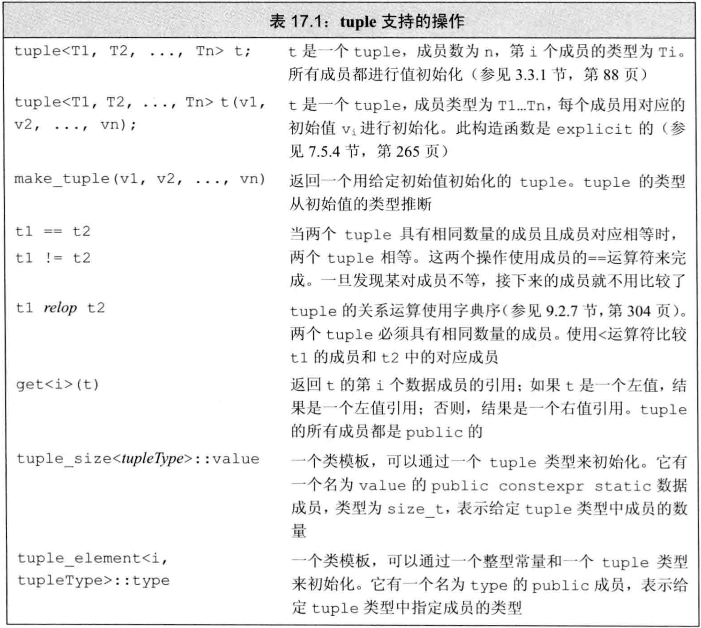
定义和初始化tuple
- 定义一个tuple时，需要指出每个成员的类型。它们是模板参数，故必须在编译期确定
- 创建tuple对象时，可使用tuple的默认构造函数，它会对每个成员
值初始化。也可为每个成员提供初始值。tuple的接受初始值的构造函数是explicit的，即必须使用直接初始化而不能通过类型转换调用 - 可用
make_tuple函数（类似make_pair）生成tuple对象，它用实参的类型来推断tuple的类型 - 例子：tuple定义和初始化
|
|
- tuple类型的成员数目没有限制，故其成员都是匿名的，只可用
get函数访问 get是函数模板：- 接受一个显式模板实参指出要访问第几个成员，该实参是非类型参数，必须是整型的
constexpr（模板参数必须在编译期确定） - 接受一个函数实参指出访问哪个tuple对象
- 返回指定成员的引用
- 接受一个显式模板实参指出要访问第几个成员，该实参是非类型参数，必须是整型的
- 若不知道一个tuple的准确类型，可以用两个辅助类模板来查询tuple成员的数量和类别：
tuple_size<tuple_type>::value可查询tuple_type有几个成员tuple_element<num,tuple_type>::type可查询tuple_type的第num个成员的类型
- 例子：访问tuple的成员及其类型
|
|
- tuple的相等算符和关系算符类似容器：
- 只有两个tuple的成员数量相同才可比较
- 逐对比较成员，只有成员有
==时才可比较tuple的==，只有成员有<时才可比较tuple的<
- 由于tuple有==和<，故可将其传递给算法。另外，无序容器中可用tuple作为关键字类型
- 例子：tuple的相等和关系算符
|
|
使用tuple返回多个值
- tuple的常见用途是从一个函数返回多个值
- 例子：使用tuple从函数返回多个值
|
|
bitset类型
- 标准库定义的
bitset使位操作更容易，而且能处理超过整型大小的位集合 bitset是类模板，定义在头文件bitset
定义和初始化bitset
- bitset是类模板，实例化时需指定一个模板非类型参数，表示有多少个bit。实例化后大小固定，类似
array - 由于位集合的大小是模板参数，故必须是
constexpr - bitset中的二进制位是匿名的，通过位置编号访问。最
低位编号为0，最高位对应最大编号 - bitset的初始化方法见表17.2 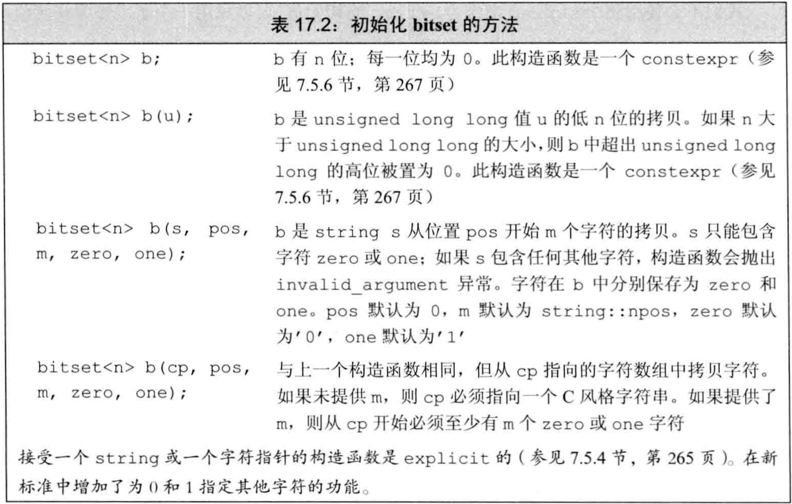
- 使用整型值初始化bitset时，该值先被转换为
unsigned long long然后被当作位模式，bitset中的位是它的副本：- 若bitset的位数多于该unsigned long long，则bitset低位填充高位置0
- 若bitset的位数少于该unsigned long long，则只使用低位，高位被丢弃
- 例子：使用整型初始化bitset
|
|
- 可从字符串（string或字符数组指针）来初始化bitset，此时字符直接表示bit
- 使用字符串初始化bitset时，字符串下标最小的字符对应高位，即左侧是高位。
- 可使用字符串的子串来初始化bitset
|
|
bitset操作
- bitset操作见表17.3，定义了多种检测/设置一个/多个二进制位的方法 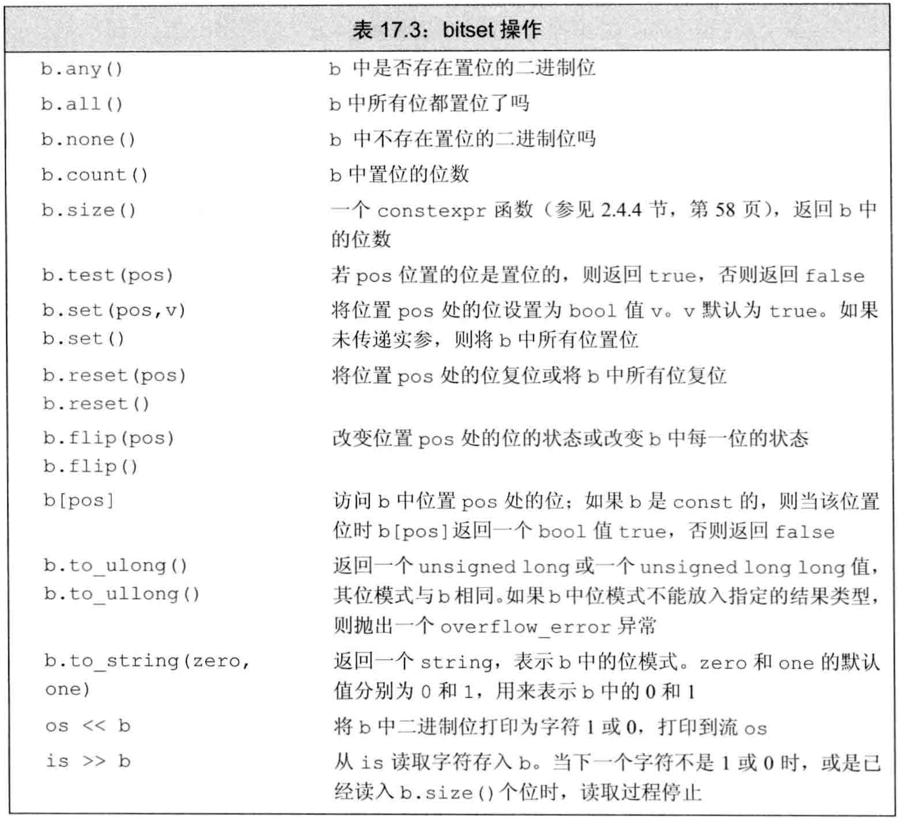
- bitset操作：
- 支持内置类型的位运算符，且含义与内置类型的位运算符用于unsigned对象相同
count/size/all/any/none操作不接受参数，返回整个bitset的状态set/reset/flip用于改变bitset的状态，它们都被重载为有参数和无参数两个版本- 接受一个参数的版本对给定位执行对应操作，参数指定位置。 set还多一个参数用于设置该位置的bit
- 不接受参数的版本对整个集合执行给定操作
test和下标算符[]接受一个参数。test只用于读指定位，下标算符[]可读可写to_ulong/to_ullong/to_string由bitset生成对应类型- 输出算符
<<将bitset打印为0/1，输入算符>>将0/1读取为bitset
- 当一个或多个位
置位（即为1）时，操作any返回true。 - 当所有位
复位（即为0）时，操作none返回true。 - 当所有位置位时，all返回true
- count和size返回的类型是size_t，count表示对象中置位的位数和，size表示对象的总位数
- size是一个
constexpr函数，可用在需要常量表达式的地方 - 下标算符[]对const属性进行了重载：
- const版本在指定位置位时返回true（即bool类型）
- 非const版本返回bitset定义的一个特殊类型，允许操纵指定位的值
- to_ulong和to_ullong都返回一个对应类型的值，只有bitset比该类型更小（即能完整放入）时才能转换，否则抛出
overflow_error异常 - 输入算符从一个流读取字符，存入临时string对象，直到字符数达到bitset的大小，或是遇到错误（例如遇到非’0’/‘1'的字符、文件尾、输入错误），则停止读取。随后用临时string对象来初始化bitset
- 例子：bitset操作
|
|
正则表达式
正则表达式是一种描述字符序列的方法，是极其强大的计算工具。- C++11在标准库中引入
正则表达式库，定义于头文件regex，它包含多个组件，见表17.4 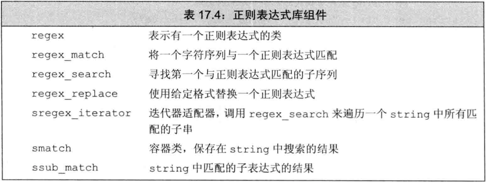 regex类表示一个正则表达式，可进行初始化/赋值/其他特定操作regex_match/regex_search/regex_replace函数用于确定给定的字符序列和给定regex是否匹配：- 若整个输入序列与表达式匹配，则regex_match返回true
- 若输入序列的子串与表达式匹配，则regex_search返回true
- regex_replace用于在输入序列中查找并替换
sregex_iterator是迭代器适配器，用于遍历输入序列中所有匹配的子串smatch是容器，用于保存匹配的相关信息（搜索结果等）ssub_match是容器，用于保存子表达式匹配的相关信息- regex_match/regex_search的参数见表17.5，它们都返回bool值表示匹配是否成功
- 接受3个参数的版本仅查找并返回bool
- 接受4个参数的版本，额外参数是smatch，若匹配成功则用于存放匹配的相关信息 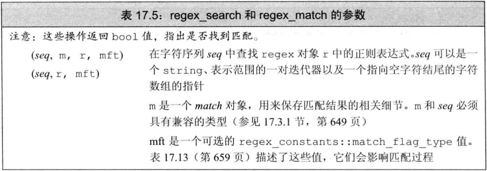
使用正则表达式库
- regex默认使用的正则表达式语言是
ECMAScript - 例子：使用正则表达式查找违反拼写规则“i除非在c之后，否则必须在e之前”的单词
|
|
- 定义一个regex或是对regex调用
assign赋予新值时，可指定一些标志来控制regex对象的处理过程，见表17.6
- 表17.6的最后6个标志指出编写正则表达式使用的语言，必须指定其中之一。默认使用ECMAScript，即使用
ECMA-262规范，这是很多web浏览器使用的正则表达式语言 - 表17.6的另外3个标志指定与正则表达式无关的方面，如是否忽略大小写、保存子表达式、权衡性能等
- 例子：匹配c++文件名，忽略大小写
|
|
- 可将正则表达式本身看作一种简单的程序设计语言编写的“程序”，它在运行时regex对象被初始化或赋予新模式时被“编译”
- 正则表达式的编写可能不符合正则表达式的语法规范，导致错误
- 正则表达式编写错误时，在运行时抛出一个
regex_error类型的异常：- 该类型有一个
what成员函数用于描述错误 - 该类型有一个
code成员函数用于返回错误类型对应的数值编码，其返回值由具体实现定义 - RE库能抛出的标准错误见表17.7 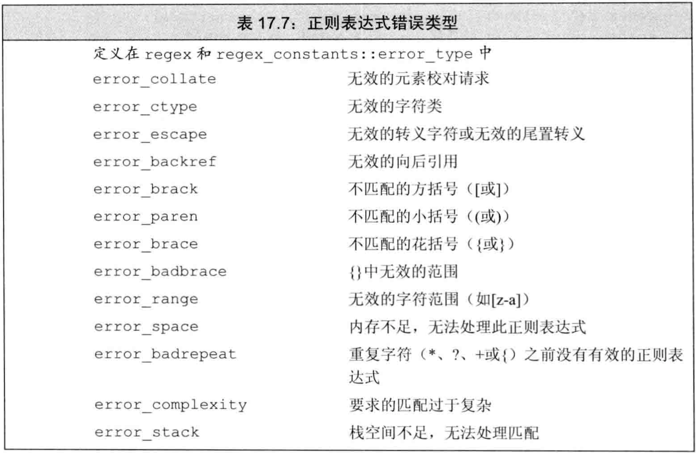
- 该类型有一个
- 例子：正则表达式书写错误时抛出异常
|
|
- 正则表达式所表示的“程序”是在运行时“编译”的，这个操作非常慢。即创建正则表达式非常慢
- 构造regex对象以及向regex对象赋值都很耗时，应尽量避免
- 可搜索多种类型的输入序列，字符可保存在string/wstring/char数组/wchar_t数组中。RE库为它们分别定义了不同的类型，见表17.8 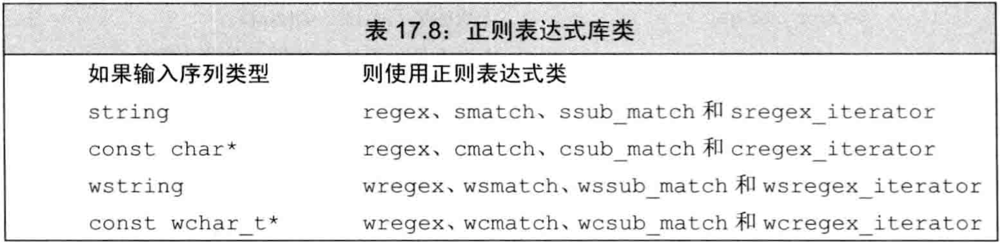
- regex类根据名字前是否有w，分为2种：
regex类由string/char数组初始化wregex类由wstring/wchar_t数组初始化
- match/sub_match/regex_iterator根据名字s和c，以及名字前是否有w，分为4种：
- 前面是
s的版本由string初始化 - 前面是
c的版本由const char *初始化 - 前面是
ws的版本由wstring初始化 - 前面是
wc的版本由const wchar_t *初始化
- 前面是
- 例子：根据类名区分正则表达式类处理的文本类型
|
|
匹配与regex迭代器类型
- 使用regex_search得到的搜索结果默认只取第一个匹配的子串。使用迭代器regex_iterator可获得所有匹配
- regex_iterator迭代器是一种迭代器适配器，被绑定到一个输入序列和一个regex对象
- regex_iterator有4种，操作见表17.9 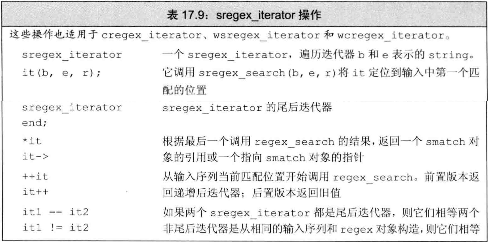
初始化regex_iterator时，- 若使用输入字符串/字符数组和regex来初始化，则调用regex_search在输入字符串/字符数组中查找第一个匹配
- 默认初始化为尾后迭代器
解引用regex_iterator时，得到对应最近一次搜索结果的match对象递增regex_iterator时，调用regex_search在输入字符串/字符数组中查找下一个匹配- 例子：使用regex_iterator遍历所有匹配，示意图见图17.1
|
|
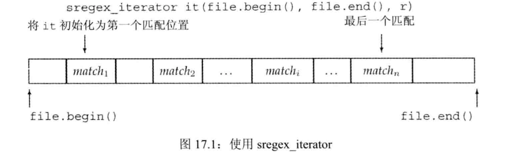
- 使用match对象来表示一次匹配的结果时，不仅可用str成员函数来得到匹配部分的内容，还能得到其他信息
- match类的操作见表17.10 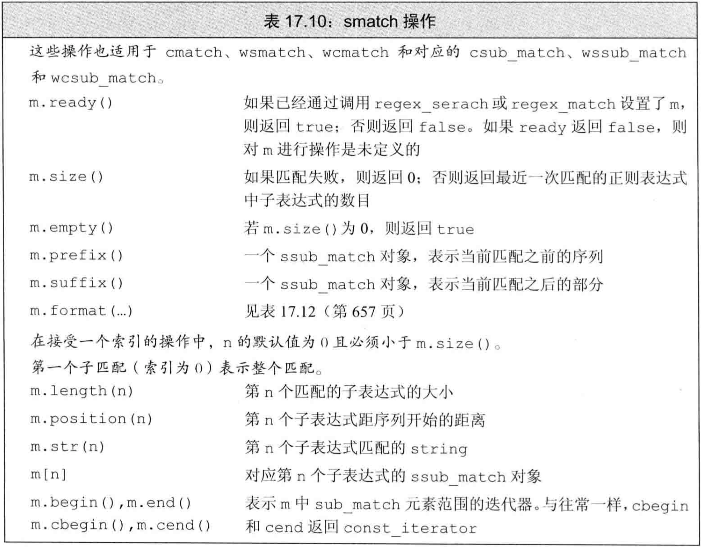
- 匹配时经常不仅要知道匹配部分，还要知道其上下文。可使用match的prefix和suffix成员函数得到：
prefix成员函数返回一个sub_match对象，表示输入字符串/字符数组中匹配部分之前的部分suffix成员函数返回一个sub_match对象，表示输入字符串/字符数组中匹配部分之后的部分
- sub_match类有两个名为str和length的成员，分别返回其代表的字符串/字符数组与其大小
- 例子：使用prefix和suffix获取匹配部分的上下文，示意图见图17.2
|
|
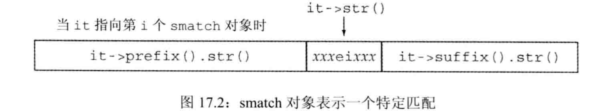
使用子表达式
- 正则表达式中的模式通常包含一个或多个
子表达式，它是模式的一部分，表示部分匹配。 - 正则表达式的语法通常用括号表示子表达式
- 对于含有子表达式的正则表达式，其匹配结果match对象的str成员函数可以有参数：0代表整个匹配部分，1代表第1个子串，以此类推。例如，正则表达式”[[:alnum:]]+\.(cpp|cxx|cc)$”，输入字符串"foo.cpp”，则匹配结果的str(0)是"foo.cpp”，str(1)是"foo”，str(2)是"cpp”
- 子表达式的常见用途是验证必须匹配特定格式的数据。即分别验证多个子式，然后验证它们之间必须满足某种关系
- ECMAScript正则表达式的一些语法：
\{d}表示单个数字，\{d}{n}表示n个数字的序列。如\{d}{3}表示3个数字的序列- 方括号
[]中的字符集合表示匹配它们中的任一个，.在方括号中没有特殊含义。如[-.]表示匹配’-‘或’.’ - 后接
?的组件是可选的。如\{d}{3}[-. ]?\{d}{4}匹配三个数字后接四个数字，中间可以有’-‘或’.‘或’ ' - 在字符前加反斜线
\表示是字符本身而不是其特殊含义（类似C++语法）。如\(和\)表示’(‘和’)‘本身而不是特殊字符 - 由于
\也是C++的特殊字符，故每次正则表达式需要转义时都需要两个\
- 对于有子表达式的正则表达式，其
match对象包含多个sub_match对象作为其元素。位置[0]表示整个匹配，[1]表示第一个子表达式的匹配，以此类推。 - 每个sub_match表示在完整匹配中，这个子表达式匹配的结果
- sub_match的操作见表17.11 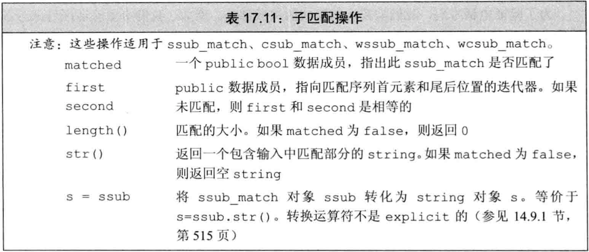
- 例子：使用子表达式匹配电话号码，对格式有限制
|
|
使用regex_replace
- 使用
regex_replace可在输入序列中查找并替换一个正则表达式。除匹配需要一个正则表达式描述匹配格式外，还需要一个字符串用于描述输出（即替换后）的形式 - regex_replace的操作见表17.12

- 输出的字符串可由匹配的子串组成，用符号$后跟子表达式的索引号来表示该子表达式
- 例子：使用regex_replace
|
|
- 标准库定义了在替换过程中控制匹配或格式的标志，它们可传递给函数regex_search/regex_match，或是类match的format成员
- 匹配和格式化标志都是值，它们类型都是
match_flag_type，定义在命名空间regex_constants，经常使用using namespace std::regex_constants;来引入该命名空间的所有名字 - 匹配和格式化标志见表17.13 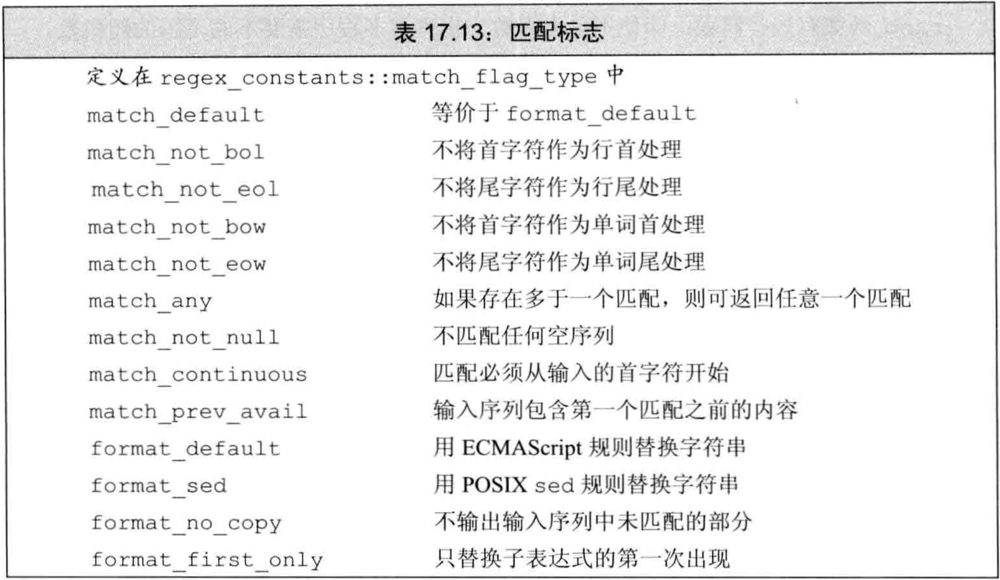
- 默认regex_replace返回整个输入序列，仅将匹配部分替换为指定格式，未匹配部分原样输出。可用format_no_copy来阻止保留未匹配部分
- 例子：用format_no_copy来阻止保留未匹配部分
|
|
随机数
- 在C++11之前，C和C++都依赖一个简单的C库函数
rand来生成随机数。rand函数生成均匀分布的伪随机整数，范围在0和最大值（与系统相关，至少为32767）之间 - 很多时候需要不同范围的随机数、随机浮点数、非均匀分布的随机数，程序员在转换rand生成的随机数的范围、类型、分布时，经常引入非随机性。
- C++11在头文件
random中定义了随机数库，通过一组协作的类来生成随机数：随机数引擎类用于生成一系列unsigned随机数的序列随机数分布类使用引擎类生成指定类型、指定范围、指定分布的随机数
- C++程序不应使用C库函数rand，而应使用C++11的
default_random_engine类和恰当的分布类 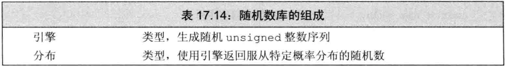
随机数引擎和分布
- 随机数引擎是函数对象类，它们定义了调用算符
()，该算符不接受参数，返回一个随机unsigned整数 - 通过调用随机数引擎对象来生成一个
原始随机数，每次调用生成的原始随机数是随机序列中的一个值 - 例子：调用随机数引擎生成原始随机数序列
|
|
- 标准库定义了多个随机数引擎类，它们的性能和随机性质量不同，由编译器指定哪一个作为default_random_engine类型。
- 标准库定义的随机数引擎类型在附录A.3.2中，随机数引擎的操作见表17.15 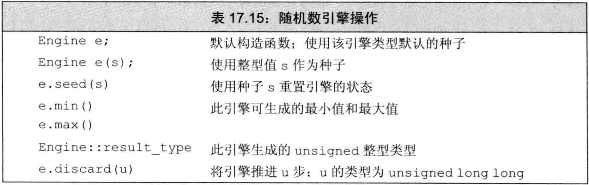
- 大多数场合不能直接使用随机数引擎的输出（原始随机数），因为范围、类型、分布并非所需，而正确转换很难
- 为得到指定范围内的随机数，需使用分布类型的对象
- 例子：通过分布类型来指定随机数的范围、类型、分布
|
|
- 分布
uniform_int_distribution是模板类，用于生成均匀分布。模板参数提供生成随机数的类型，构造函数形参指定取值范围。 - 分布类型也是函数对象类，它们定义了调用算符，接受一个随机数引擎对象，使用这个引擎生成原始随机数并映射到自己的分布。
- 传递给分布对象的是引擎对象本身而不是其原始随机数，因为某些分布可能需要多次调用引擎才能得到一个值
随机数发生器是指分布对象和引擎对象的组合- 调用引擎类default_random_engine对象的输出类似C库函数rand的输出，区别在于：
- 随机数引擎生成的unsigned在系统定义的范围内，该范围可通过调用引擎对象的
min和max成员函数获得 - rand生成的unsigned在0到
RAND_MAX之间。
- 随机数引擎生成的unsigned在系统定义的范围内，该范围可通过调用引擎对象的
- 同样的随机数发生器产生的随机数序列相同：
- 对于一个给定的随机数发生器，每次运行程序时给出的随机数序列都是相同的。解决方案：每次运行时使用不同的种子
- 程序内多次以相同的设置来初始化随机数发生器，产生的随机数序列也是相同的。解决方案：将随机数发生器声明为static
- 程序中需要从同一随机数发生器中多次取随机数时，应将引擎和分布对象都声明为
static。因为若每次都以相同的设置创建随机数发生器，则每次生成的序列都相同。 - 例子：同样的随机数发生器产生的随机数序列相同，使用static保证不会取到相同的随机序列
|
|
- 若在函数中定义了局部的随机数发生器，应将其（引擎和分布对象）声明为static，否则每次调用生成的序列都相同
- 随机数发生器生成相同的随机数序列这一特性在调试时很有用，但希望每次运行程序都得到不同的随机数序列，则可在每次运行时提供不同的种子。
种子是一个数值，引擎利用种子从序列的一个新位置重新开始生成随机数。只要种子不同，生成的随机序列就不同- 为引擎设置种子有两种方式：
- 创建引擎对象时提供种子
- 调用引擎对象的seed成员
- 例子：指定种子生成随机序列
|
|
- 选择恰当的种子很难，经常使用C系统函数
time。该函数定义在头文件ctime中- 它返回一个特定时刻到当前共经过了多少秒
- 它接受单个指针参数，指向用于写入时间的数据结构，若该指针为空则简单的返回时间
- 例子：使用time产生种子
|
|
- time返回的时间以秒计，故该方法只适合生成种子的间隔为秒级或更长的应用
- 若程序周期性运行，或周期性取time，则它生成的值可能是相同的，不适合当种子
其他随机数分布
- 程序经常需要不同类型、不同分布的随机数，标准库定义不同的随机数分布对象来满足这些需求，分布对象和引擎对象协同工作。
- 程序经常需要随机浮点数，特别是0到1之间的随机数。
- C++11之前经常用rand()的结果除以RAND_MAX，但这样精度太低，可生成的数量只有RAND_MAX个
- C++11之后可使用uniform_real_distribution分布类，让标准库处理随机整数到随机浮点数的映射
- 例子：使用uniform_real_distribution获得随机浮点数
|
|
- 随机数分布类型支持的操作见表17.16 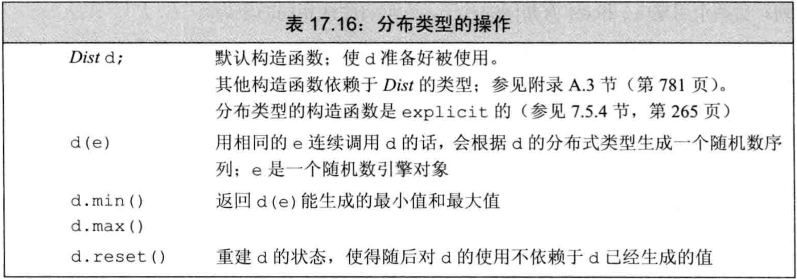
- 分布类型都是模板，且有一个模板类型参数表示生成随机数的类型（
bernoulli_distribution是例外，它不是模板类，总是返回bool值）。这些分布类型只能生成浮点数或整型数 - 每个分布模板都有一个默认模板实参，生成浮点值的分布类型默认生成
double，生成整型值的分布类型默认生成int。使用默认模板实参时也需要空的尖括号 - C++11可生成非均匀分布的随机数，它定义了20种分布类型，见附录A.3
- 例子：可视化正态分布
|
|
- 二项分布
bernoulli_distribution不是类模板，故不接受模板参数，它总是返回bool值。 - bernoulli_distribution返回true的概率是常数，构造时指定，默认为0.5
IO库再探
格式化输入与输出
- 除
条件状态外，每个iostream对象还维护一个格式状态来控制IO的细节，如整型是几进制、浮点值精度、输出元素宽度等 - 标准库定义一组
操纵符来修改流的格式状态。一个操纵符是一个函数或对象，能用作输入/输出算符的运算对象，并能影响流的状态。 - 大多数操纵符不接受参数，它们定义于头文件
iostream中，见表17.17 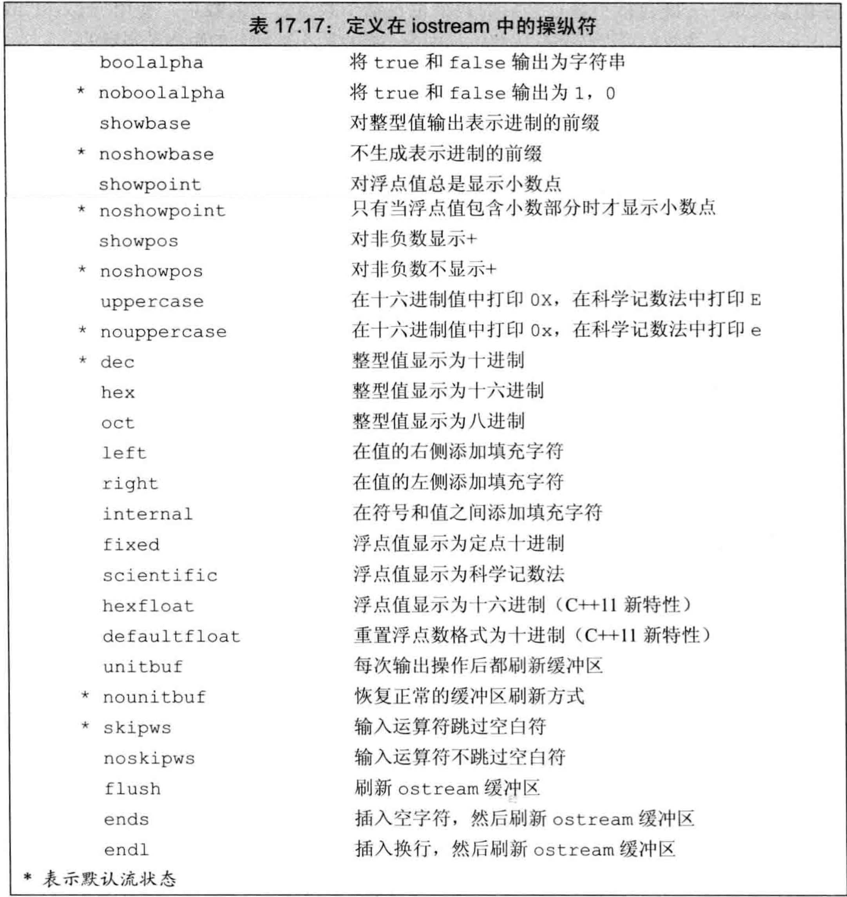 - 操纵符返回它所处理的流对象（类似输入/输出算符），故可在语句中组合使用操纵符和数据
endl是一个操纵符，它不是一个值而是一个操作，将其写到输出流的效果是输出一个换行符并刷新缓冲- 操纵符用于两大类输出控制： 控制数值的输出形式、控制补白的数量和位置。
- 操纵符改变流的格式状态时，通常改变后的状态对所有后续IO都生效
- 大多数改变格式状态的操纵符都是
设置/复原成对的：一个操纵符将格式状态设置为新值，另一个操纵符将其复原 - 利用操纵符对格式的改变是持久的这一特性，可在一个流上叠加多个操纵符。但不需要特殊格式时应尽快恢复到默认
- 默认将bool值打印为0/1，使用
boolalpha/noboolalpha可设置bool值打印为0/1或true/false - 例子：使用boolalpha/noboolalpha控制bool打印的内容
|
|
- 默认整型值的输入输出使用十进制，可使用操纵符
hex/oct/dec将其改为十六进制/八进制/十进制，它们只影响整型值，不影响浮点值 - 默认打印整型值时不打印表示进制的
前导字符，可使用操纵符showbase/noshowbase使流打印整型值时显示/不显示进制：前导0x是十六进制，前导0是八进制，无前导是十进制 - 默认十六进制的值和前导字符都以小写打印，可使用操纵符
uppercase/nouppercase使十六进制的值和前导字符以大写打印 - 例子：使用操纵符控制整型数的的进制
|
|
- 可以控制浮点数输出三种格式：
- 以多高精度/多少个数字打印浮点值，默认按六位数字精度打印
- 打印为十六进制/定点十进制/科学记数法，默认非常大和非常小的值打印为科学记数法，其他值打印为定点十进制
- 无小数点的浮点数是否打印小数点，默认对无小数点的浮点数不打印小数点
- 精度控制打印的数字的总数，打印时浮点值按当前精度舍入。可通过调用IO对象的precision成员函数或setprecision操纵符来改变打印精度。
precision成员函数是重载的，一个版本接受int值用于指定精度，并返回旧精度值，另一个版本不接受参数，返回当前精度值setprecision操纵符接受一个参数，用于设置精度
- setprecision和其他接受参数的操纵符都定义在头文件
iomanip中，见表17.18 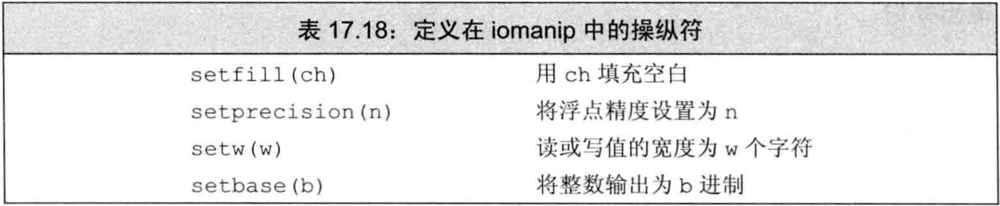 - 例子：控制浮点数打印的精度
|
|
- 操纵符
scientific可使流使用科学记数法，操纵符fixed可使流使用定点十进制 - C++11可用操纵符
hexfloat使流使用十六进制，可用操纵符defaultfloat将流恢复到默认状态，即根据打印值的大小选择科学记数法/定点十进制 - 浮点数操纵符会改变精度的默认含义：
- 执行scientific/fixed/hexfloat后，精度值是指小数点后的数字位数
- 执行defaultfloat后（即默认状态下），精度值是指数字的总位数
- 默认十六进制数字和科学计数法中的e都是小写，可用
uppercase操纵符将它们打印为大写，nouppercase操纵符恢复默认行为 - 默认小数部分为0的浮点值不打印小数点和小数部分，可用
showpoint操纵符设定为打印小数点和小数部分，noshowpoint操纵符恢复默认行为 - 例子：控制浮点数的显示形式
|
|
- 按列打印时，需要用操纵符精细地控制数据格式
setw指定下一个数字或字符串值的最小空间（它是特例，只设置下一个值，不设置整个流）left指定左对齐输出right指定右对齐输出，右对齐是默认internal控制负数的负号位置，它左对齐负号，右对齐数值，用空格填满中间setfill允许指定一个字符来补白输出，默认是空格
- 例子：输出补白
|
|
- 默认输入算符会忽略空白符（空格符/制表符/换行符/换纸符/回车符），操纵符
noskipws会让输入算符读取空白符，操纵符skipws恢复默认行为 - 例子：控制输入算符读取空白符
|
|
未格式化的输入/输出操作
- 多使用
格式化IO操作，即使用输入输出算符>>/<<根据读取/写入的数据类型来格式化它们。输入算符忽略空白，输出算符应用空白、精度等规则 未格式化IO是标准库提供的底层操作，它们将流当作未解释的字节序列来处理- 有几个未格式化操作每次一个字节地处理流，它们会读取空白符，见表17.19 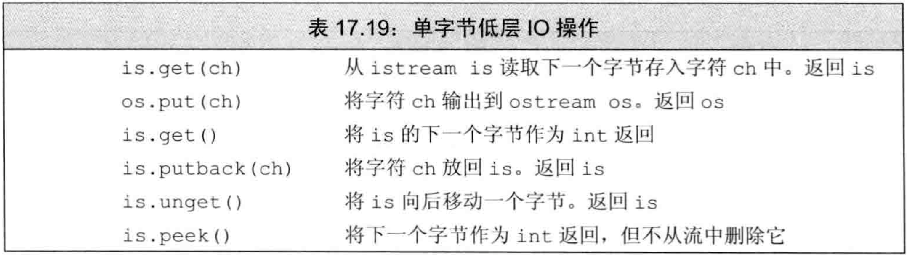
- 有时候需要读取一个字符才能知道还未准备好处理它，此时希望将字符放回流中。标准库有3种方法从流中退回字符：
peek返回输入流中下一个字符的副本，但不会将它从流中删除unget使输入流向后移动，最后读取的值又回到流中putback是特殊的unget，它退回从流中读取的最后一个值。但它接受一个参数，该参数必须与最后读取的值相同
- 一般在读取下一个值之前，标准库保证可退回至多一个值。即，标准库不保证在中间不进行读取操作的情况下可连续调用putback/unget
- peek和无参的get都以
int（而非char）类型从输入流中返回字符，原因：- char无法表示EOF
- char是unsigned还是signed取决于机器
- 返回int的函数将它们要返回的字符先转换为unsigned char（？？），然后将结果提升为int。因此即使字符集中有字符映射到负值，这些操作返回的int也是正值
- 标准库用负值表示EOF，这样可保证与任何合法字符都不同。头文件
cstdio定义了名为EOF的const，可用它来检测一个值是否是文件尾，而不必记住文件尾的实际数值 - 例子：从流中取字符的函数返回int
|
|
- 一些未格式化IO操作一次处理多个字符，它们速度较快但容易出错，需要程序员自己分配/管理用于存储数据的字符数组
- 处理多字符的底层IO操作见表17.20 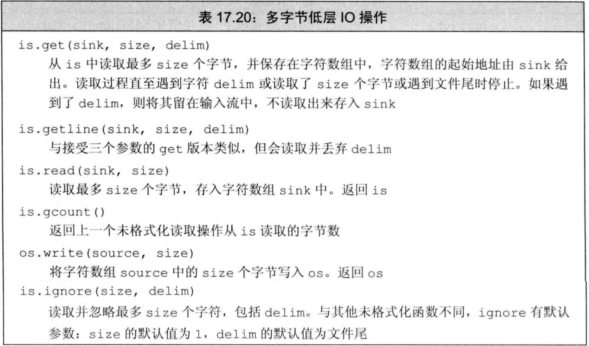
get和getline函数接受相同的参数，表中的sink都是保存数据用的char数组，两函数都一直读数据，直到：已读取size-1个字符/遇到分隔符delim/遇到文件尾- get遇到分隔符时不读取，将其留作istream的下一个字符
- getline遇到分隔符时读取并丢弃
- 某些操作从输入读取未知个数的字节，可调用
gcount来确定最后一次未格式化的输入操作读取了多少个字符 - 应在任何后续的未格式化输入操作之前调用gcount，特别的，将字符退回流的单字符操作也是未格式化的输入，若在peek/unget/putback之后调用gcount，则其返回0
- 一般应使用标准库提供的高层抽象来处理IO，避免使用底层IO
- 底层IO通常用于读取二进制值的场合，且这些二进制不能直接映射到普通字符和数值
- 一个常见的错误是用char而非int来存储get/peek的返回值，且该错误不能被编译器发现
- 例子：反例，用char而非int来存储get/peek的返回值
|
|
流随机访问
- 各种流类型通常（除iostream外）都支持对数据的随机访问。可重定位流，使其跳过一些数据
- 标准库提供了一对函数：
seek用于定位到流中的指定位置tell返回当前的位置
- 随机IO本质上依赖系统，使用这些特性需查询系统文档
- 虽然标准库为所有流类型都定义了seek/tell，但它们的意义取决于设备。在多数系统中，对于绑定到
cin/cout/cerr/clog的流进行随机访问是无意义的，对它们调用seek/tell会在运行时报错并将流置于无效状态 istream/ostream类型通常不支持随机访问，使用随机访问的情形经常是fstream/sstream- 为支持随机访问，IO类型维护一个
标记来确定下一个读写操作在哪里进行，它提供两个函数- seek通过将标记定位到给定位置来重定位它
- tell告知标记的当前位置
- 标准库定义了两对seek/tell，见表17.21
- 后缀是
g的版本用于输入流，表示读取数据（get） - 后缀是
p的版本用于输出流，表示写入数据（put） 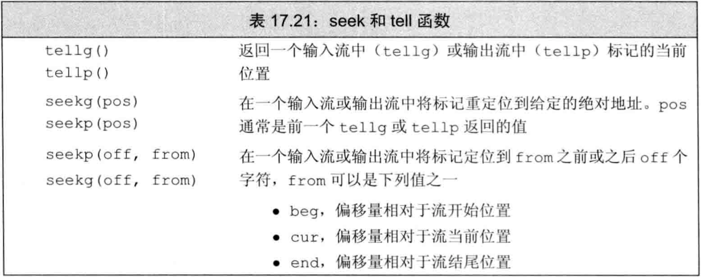
- 后缀是
- 逻辑上，只能对可读的流使用g版本，只能对可写的流使用p版本：
- 只能对istream及其派生出的ifstream/istringstream使用g版本
- 只能对ostream及其派生出的ofstream/ostringstream使用p版本
- iostream/fstream/stringstream既可用g版本又可用p版本
- 标准库对一个流只维护一个标记，g版本和p版本共用标记，不存在独立的“读标记”和“写标记”
- seek函数有两个重载的版本，一个移动到绝对地址，另一个移动到指定位置的指定偏移量
- 表17.21中seek函数的形参pos类型是pos_type，形参off的类型是off_type，它们定义于头文件istream和ostream
pos_type类型表示文件中的绝对位置off_type类型表示文件中位置的偏移量，可正可负
- tell函数返回一个pos_type类型的值表示标记的当前位置，通常用来记住一个位置以便稍后定位回来
- 例子：使用流随机访问来读写同一文件
|
|